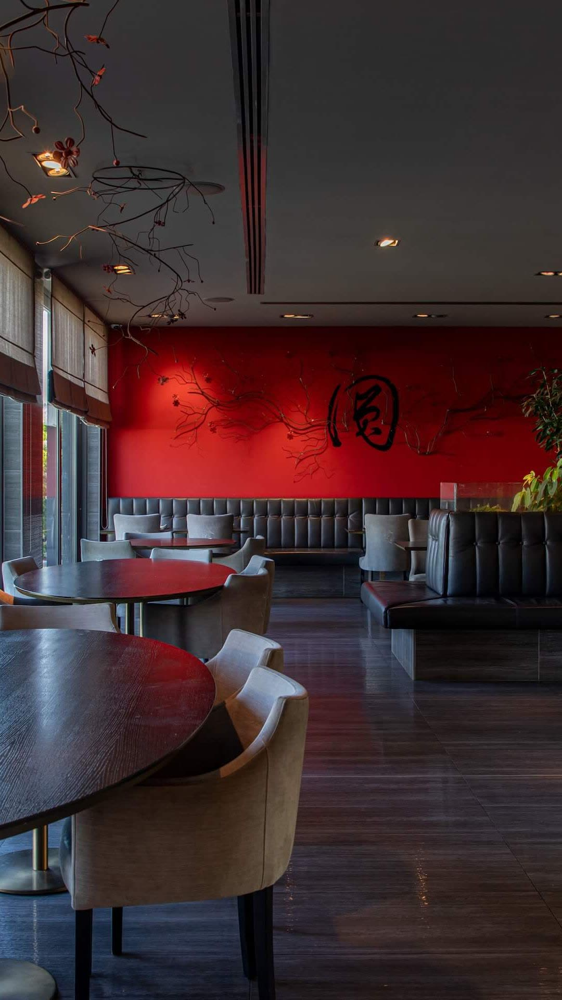
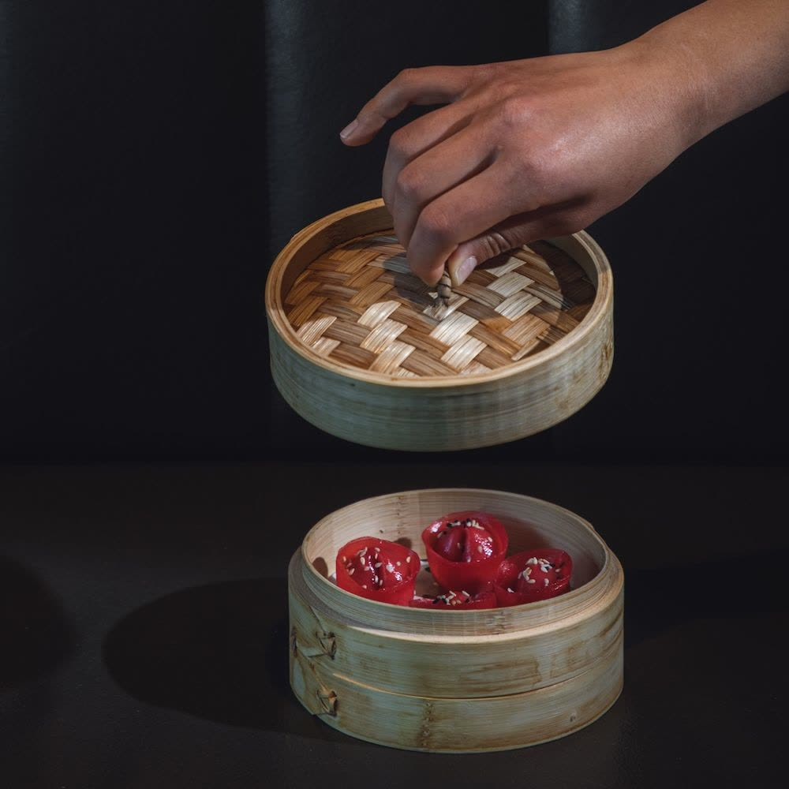
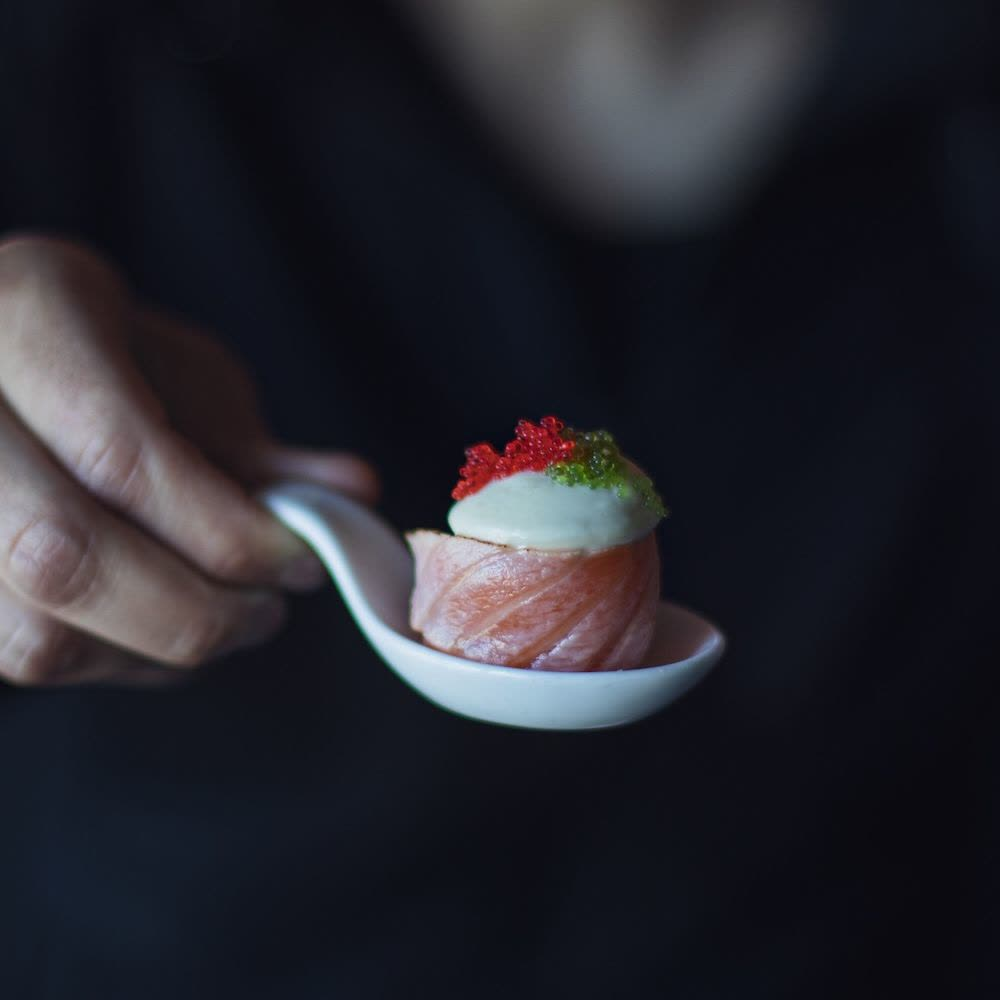
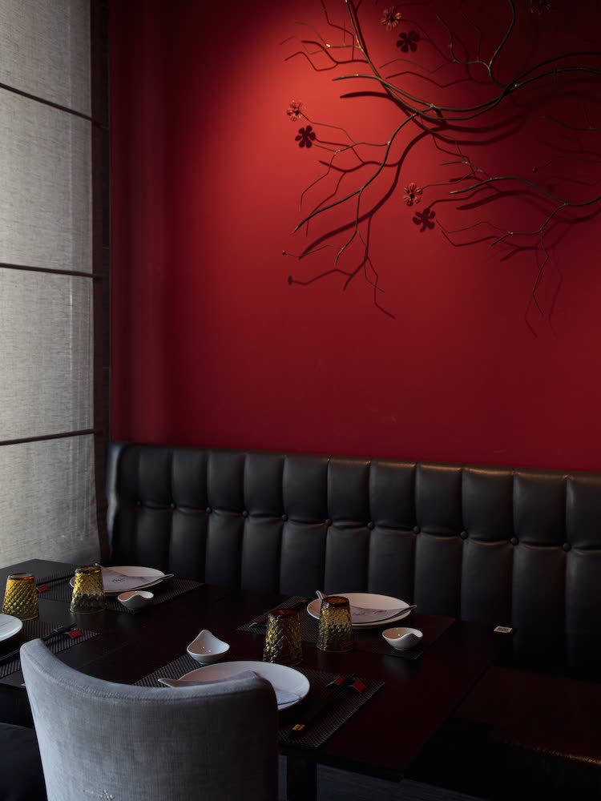
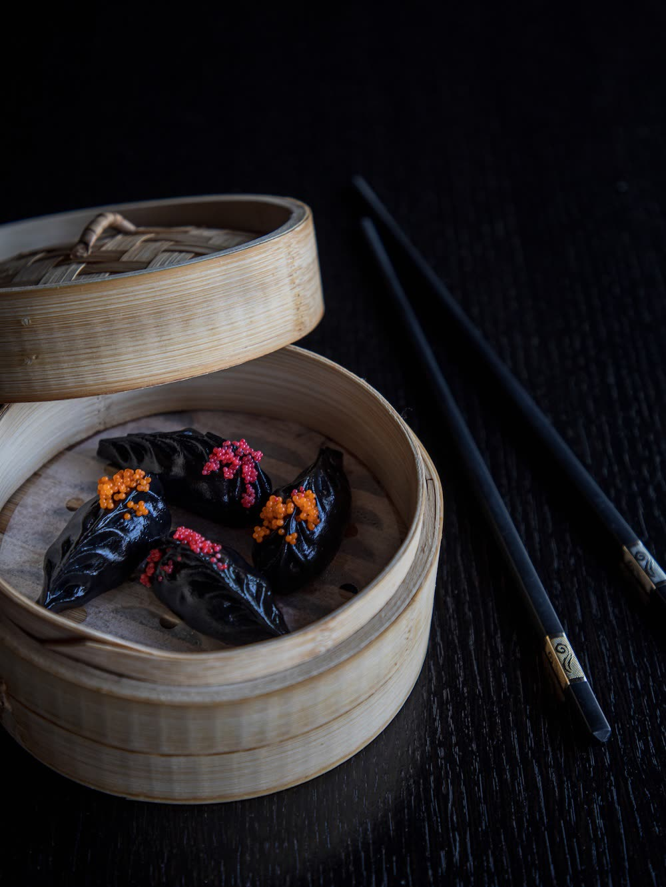
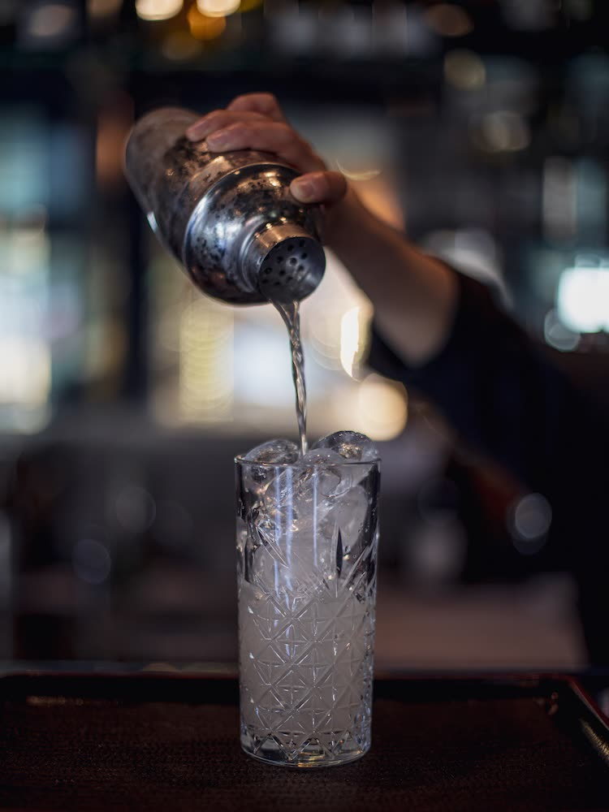
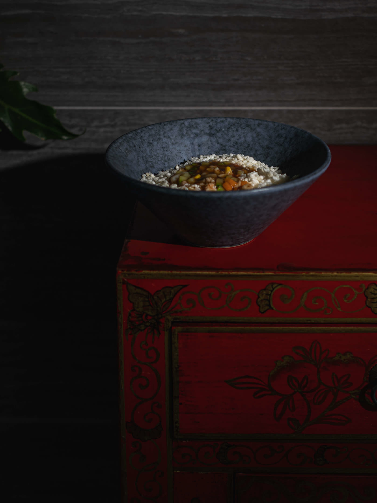
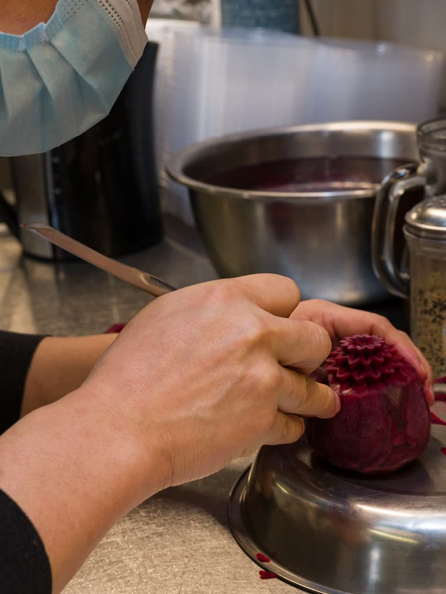
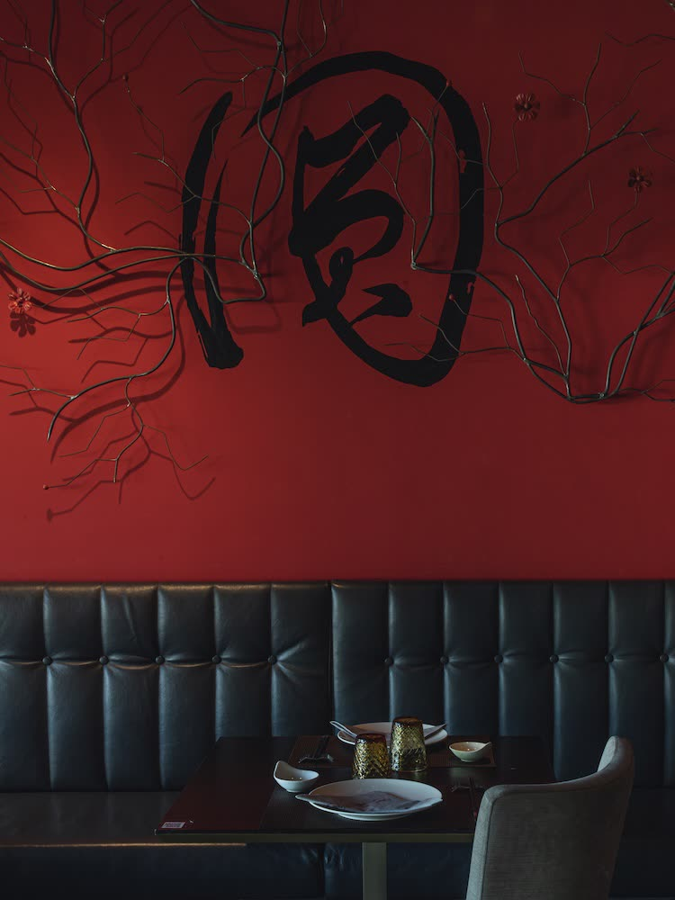

Due cucine.Un solo tavolo.
Cucina cinese e giapponese alla carta, a San Lazzaro di Savena, Bologna. Ingredienti freschi e selezionati, in un ambiente moderno e minimale ispirato alla filosofia orientale.
Martedì – Domenica · 12:00 – 14:30 · 19:00 – 23:00
Tradizione cinese
Un viaggio lungo la Via della Seta alla ricerca dello Yin e Yang, pilastri della religione e della filosofia cinese che la fanno da padrone anche in cucina.
I cibi nascono da una continua ricerca di equilibrio tra gli opposti: tra i sapori, tra piatti caldi e freddi. Una pietanza cinese deve soddisfare il palato e al contempo la vista e l'olfatto, per regalare un vero viaggio sensoriale in Oriente.
Scopri i piatti cinesi
Tradizione giapponese
La cucina giapponese è prima di tutto vista, bellezza: pensata per essere assaggiata con gli occhi, gioco estetico di forme e colori.
Per i nostri chef i coltelli sono strumenti quasi sacri. Il pesce crudo viene servito perfetto semplicemente grazie al suo taglio, con ingredienti manipolati il meno possibile per preservare la purezza dei sapori.
Scopri i piatti giapponesi
Atmosfere
orientali.
Ingredienti freschi e selezionati
Un'esperienza culinaria stimolante sia per gli occhi che per il palato, con le ricette originali della tradizione orientale.
Design moderno e sofisticato
È di scena nell'arredamento, nei suoni e sui tavoli del ristorante, con dettagli intimi e minimali.
Tè e cocktail
Puoi assaporare l'originale tè cinese o ordinare uno dei cocktail ideati dai nostri barman come accompagnamento a ogni piatto.






Vivi l'esperienza Dong
Prenota un tavolo
Chiamaci dal martedì alla domenica, dalle 10:00 alle 18:30. Anche per la sala privata: compleanni, lauree o una serata tra amici.
Ordina da asporto
Scegli i piatti sul nostro shop e ritira in negozio all'orario che indichi nelle note.
Consegna a casa
Le nostre specialità a domicilio, con Deliveroo.
Dove siamo
via Russo, 4
San Lazzaro di Savena (BO)
- Martedì – Domenica
- 12:00 – 14:30 · 19:00 – 23:00
- Lunedì
- Chiuso
- Ordini e prenotazioni
- Martedì – Domenica, 10:00 – 18:30
 Apri la mappa
Apri la mappa